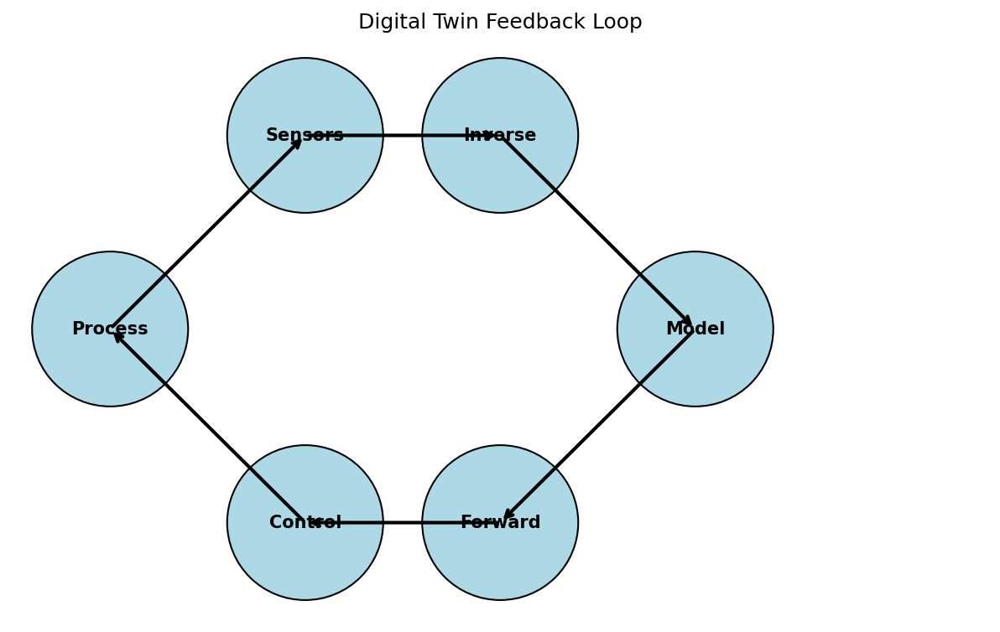

flowchart LR
A["Desired Properties<br>y*"] -->|"Inverse Problem<br>x = f⁻¹(y)"| B["Required Process<br>x*"]
B -->|"Forward Problem<br>y = f(x)"| C["Achieved Properties<br>y"]
C -->|"Compare"| A
style A fill:#e74c3c,color:#fff
style B fill:#2ecc71,color:#fff
style C fill:#3498db,color:#fffMachine Learning in Materials Processing & Characterization
Unit 9: Inverse Problems and Process Maps
01. Learning Outcomes
After this unit, you will be able to:
- Distinguish forward from inverse problems and explain why inverse problems are ill-posed
- Apply regularization strategies (Tikhonov, Bayesian priors) to stabilize inverse solutions
- Construct process maps and identify safe operating windows for manufacturing
- Formulate PINNs-based inverse problems to discover material parameters from data
- Explain the SINDy algorithm and its use for discovering governing equations from data
Welcome to Unit 9. This is one of the most practically important units in the course. In engineering, we rarely want to solve the forward problem — we almost always want to solve the inverse: given the properties I need, what process parameters should I use? This unit covers why that question is fundamentally harder than the forward direction, what tools we have to answer it, and how modern ML approaches like PINNs and SINDy are changing the game. We will also cover process maps, which are the engineer’s tool for visualizing the feasible parameter space.
Section 1: Forward / Inverse Duality
The Fundamental Asymmetry
We begin with the most important conceptual distinction in applied science and engineering: the difference between forward and inverse problems. Understanding this asymmetry is essential before we can discuss solutions.
02. Recap: Forward Modeling
Process → Structure → Properties
The forward problem is what we have been doing in previous units:
\[\mathbf{y} = f(\mathbf{x}) + \varepsilon\]
Given process parameters \(\mathbf{x}\), predict the resulting structure or properties \(\mathbf{y}\).
Examples:
| Input \(\mathbf{x}\) | Model \(f\) | Output \(\mathbf{y}\) |
|---|---|---|
| Laser power, scan speed | Thermal simulation | Melt pool depth |
| Alloy composition | CALPHAD | Phase fractions |
| Annealing time, temperature | Diffusion model | Grain size |
- Forward problems are typically well-posed: the output is uniquely determined by the input
- Physics gives us the direction of causality: cause \(\rightarrow\) effect
Let me remind you of the forward problem structure. In all the previous units, we have been building models that take process parameters as input and predict material properties or structures as output. This follows the causal chain: we set the laser power and scan speed, and physics determines the melt pool geometry. This direction is natural and well-behaved. Given the same inputs, we get the same output — up to measurement noise. The forward model is unique and continuous. But in engineering practice, we almost never want to solve this problem. We want the reverse.
03. What Is an Inverse Problem?
Structure → Process
The inverse problem reverses the arrow:
\[\mathbf{x} = f^{-1}(\mathbf{y})\]
Given the desired output \(\mathbf{y}^*\), find the input \(\mathbf{x}^*\) that produces it.
The question engineers actually ask:
- “I need a part with \(< 0.1\%\) porosity — what laser parameters should I use?”
- “I want a grain size of \(10\,\mu\text{m}\) — what annealing schedule gives me that?”
- “I need yield strength \(> 800\,\text{MPa}\) — what alloy composition and heat treatment?”
Here is the key reversal. The inverse problem asks: given the properties I want, what process parameters do I need? This is the question that every manufacturing engineer, materials designer, and process developer asks every day. The Mermaid diagram shows the relationship: we start with desired properties, use the inverse mapping to find process parameters, then verify with the forward model. In an ideal world, the forward and inverse are simply inverses of each other. But as we are about to see, the inverse direction is fundamentally harder.
04. The Challenge: Non-Uniqueness
Many Inputs Can Produce the Same Output
If the forward map \(f\) is many-to-one, then \(f^{-1}\) is one-to-many:
\[f(\mathbf{x}_1) = f(\mathbf{x}_2) = \ldots = f(\mathbf{x}_k) = \mathbf{y}^*\]
Materials example:
A grain size of \(d = 10\,\mu\text{m}\) can be achieved by:
- High temperature, short time: \((T_1 = 1100°\text{C},\; t_1 = 5\,\text{min})\)
- Moderate temperature, medium time: \((T_2 = 900°\text{C},\; t_2 = 60\,\text{min})\)
- Low temperature, long time: \((T_3 = 750°\text{C},\; t_3 = 480\,\text{min})\)

- The forward problem has one answer; the inverse has infinitely many
- Which solution should we choose? Physics alone does not decide — we need additional criteria
This is the fundamental difficulty. Consider the simple example of grain growth during annealing. The grain size depends on both temperature and time. If I draw an iso-contour at d equals 10 micrometers, I get a curve in the T-t plane — every point on that curve is a valid solution to the inverse problem. The forward problem is unique: fix T and t, and physics determines d. But the inverse problem has infinitely many solutions. This is not a bug in our method — it is a fundamental property of the physics. To pick a single solution, we need additional information: cost constraints, energy consumption, equipment limitations, or other quality requirements. This is where regularization and process maps come in.
05. Why Standard NNs Fail for Inverse Problems
The Averaging Problem
Train a standard neural network to map \(\mathbf{y} \rightarrow \mathbf{x}\) using MSE loss:
\[\mathcal{L} = \frac{1}{N}\sum_{i=1}^{N} \|\mathbf{x}_i - \hat{\mathbf{x}}(\mathbf{y}_i)\|^2\]
If multiple valid solutions \(\{\mathbf{x}_1, \mathbf{x}_2, \mathbf{x}_3\}\) exist for the same \(\mathbf{y}^*\):
\[\hat{\mathbf{x}}_\text{NN} \approx \frac{1}{k}\sum_{j=1}^{k}\mathbf{x}_j \quad \text{(the mean of valid solutions)}\]
The mean of valid solutions is often not itself a valid solution!
The Averaging Trap
A standard neural network trained with MSE loss on an inverse problem will predict the average of all valid solutions. This average may lie in a region of parameter space that produces defective parts — it is a physically meaningless compromise.
This is a critical insight. If you naively train a neural network to go from desired properties to process parameters using mean squared error, the network will learn to predict the average of all training examples that produced the desired output. But if the inverse mapping is multi-valued, the average of two valid solutions is typically not a valid solution. Imagine two valid annealing schedules: high-T-short-t and low-T-long-t. The average is a medium-T-medium-t schedule that might produce a completely different grain size or even trigger an unwanted phase transformation. The network confidently predicts a set of parameters that will produce a defective part. This is why we need specialized approaches for inverse problems.
Section 2: Ill-Posedness & Regularization
Taming Unstable Solutions
In Section 2 we formalize the concept of ill-posedness using Hadamard’s conditions, and then introduce regularization as the primary tool for converting ill-posed problems into well-posed ones. This mathematical framework underpins all modern inverse problem methods, from classical Tikhonov regularization to Bayesian inference.
06. Hadamard’s Definition of Well-Posedness
Three Conditions (Jacques Hadamard, 1902)
A problem is well-posed if and only if all three conditions hold:
- Existence: A solution exists for every admissible input
- Uniqueness: The solution is unique
- Stability: The solution depends continuously on the data — small changes in input produce small changes in output
A problem that violates any of these conditions is called ill-posed.
| Condition | Forward Problem | Inverse Problem |
|---|---|---|
| Existence | Usually yes | May fail (no process gives exactly \(\mathbf{y}^*\)) |
| Uniqueness | Usually yes | Often fails (many-to-one forward map) |
| Stability | Usually yes | Often fails (noise amplification) |
Jacques Hadamard formalized these three conditions in 1902, and they remain the gold standard for classifying problems. Most forward problems in materials science satisfy all three: given process parameters, there exists a unique microstructure that depends continuously on those parameters. Inverse problems routinely violate all three. There may be no process that achieves exactly the desired properties — only approximate solutions exist. Multiple processes may achieve the same target — violating uniqueness. And small perturbations in the measured data may cause the inferred parameters to change wildly — violating stability. The fact that most interesting engineering problems are ill-posed is one of the great challenges of applied science.
07. When Problems Are Ill-Posed
The Butterfly Effect in Inversion
Stability violation — noise amplification:
If the forward model maps a large range of inputs to a narrow range of outputs, then the inverse must map a narrow range of outputs back to a large range of inputs.
\[\text{Forward: } \Delta x = 100 \;\rightarrow\; \Delta y = 1\] \[\text{Inverse: } \Delta y = 1 \;\rightarrow\; \Delta x = 100\]
A \(1\%\) measurement error in \(y\) causes a \(100\%\) error in the inferred \(x\)!
Materials example:
- Measuring porosity with \(\pm 0.05\%\) accuracy
- The inverse map amplifies this to \(\pm 50\,\text{W}\) uncertainty in laser power
- This spans the entire range between “good” and “keyholing” regimes
The stability issue is perhaps the most dangerous in practice. Consider a forward model where the porosity is relatively insensitive to laser power within a certain range — a plateau in the forward map. When you invert this, a tiny measurement uncertainty in porosity gets amplified into a huge uncertainty in the inferred laser power. This is the butterfly effect for inverse problems. A one percent error in your porosity measurement could translate to a fifty watt uncertainty in the laser power you should use — and that could be the difference between a dense part and one full of keyhole pores. This noise amplification is not a flaw in your algorithm; it is a fundamental property of the inverse problem. No clever numerical method can eliminate it — you need regularization.
08. Think About This…
The Tomography Puzzle
You have an X-ray CT scanner and take projection images of a metal part from 180 angles.
The forward problem is straightforward:
\[p_\theta(s) = \int_{\text{ray}} \mu(x, y)\, dl\]
Each projection is a line integral of the attenuation coefficient \(\mu(x, y)\).
Question 1: Is the inverse problem (reconstructing \(\mu(x, y)\) from projections) well-posed?
\(\rightarrow\) It depends! With infinite noiseless projections, it is well-posed (Radon transform is invertible). With finitely many noisy projections, it is ill-posed — many images are consistent with the data.
Question 2: What happens if you reduce from 180 projections to 10?
\(\rightarrow\) The problem becomes severely ill-posed. The null space of the measurement operator grows — there are many structures that produce the same 10 projections. You need strong priors (sparsity, smoothness, physics) to regularize.
This is a great example because tomography is ubiquitous in materials characterization. The forward problem is the Radon transform — a well-understood linear operator. With sufficient angular sampling and no noise, the inverse is mathematically exact via filtered backprojection. But in practice, we have finite projections with noise, and reducing the number of projections makes the problem increasingly ill-posed. This is exactly the scenario in fast in-situ tomography where you might have only 10 or 20 projections due to time constraints. The reconstruction requires regularization — and this is where ML approaches are making a major impact. Give students time to think before revealing the answers.
09. Regularization: Prior Knowledge as a Constraint
Turning Ill-Posed into Well-Posed
Core idea: We cannot solve the inverse problem from data alone — we need to add prior knowledge about what a “good” solution looks like.
\[\hat{\mathbf{x}} = \arg\min_{\mathbf{x}} \underbrace{\|f(\mathbf{x}) - \mathbf{y}_\text{obs}\|^2}_{\text{data fidelity}} + \lambda \underbrace{R(\mathbf{x})}_{\text{regularization}}\]
| Regularizer \(R(\mathbf{x})\) | Prior assumption | Effect |
|---|---|---|
| \(\|\mathbf{x}\|_2^2\) (L2 / Ridge) | Parameters are small | Smooth solutions, shrinks all parameters |
| \(\|\mathbf{x}\|_1\) (L1 / LASSO) | Solution is sparse | Feature selection, sets parameters to zero |
| \(\|\nabla \mathbf{x}\|_2^2\) | Solution is smooth | Suppresses oscillations |
| Total Variation \(\|\nabla \mathbf{x}\|_1\) | Piecewise constant | Preserves sharp edges |
- \(\lambda\) controls the tradeoff between fitting data and satisfying the prior
- Too small \(\lambda\): noise dominates (overfitting to noisy measurements)
- Too large \(\lambda\): prior dominates (underfitting the data)
Regularization is the primary tool for dealing with ill-posed problems. The idea is beautifully simple: we add a penalty term to our objective function that encodes our prior knowledge about what a reasonable solution looks like. The L2 penalty says “parameters should be small” — this is Tikhonov regularization, which we will discuss in detail. The L1 penalty says “the solution should be sparse” — most parameters should be zero. This connects directly to the LASSO method and to SINDy, which we will cover later. Gradient penalties enforce smoothness. Total variation preserves edges while suppressing noise. The regularization parameter lambda controls the balance. Choosing lambda is itself a non-trivial problem — cross-validation, the L-curve method, and Bayesian evidence are common approaches.
10. Physics as a Regularizer
The Most Powerful Prior
Instead of generic mathematical penalties, we can use physical laws as regularizers:
\[\hat{\mathbf{x}} = \arg\min_{\mathbf{x}} \|\mathbf{y}_\text{obs} - f(\mathbf{x})\|^2 + \lambda_\text{PDE} \underbrace{\left\|\mathcal{N}[\mathbf{u}(\mathbf{x})]\right\|^2}_{\text{PDE residual}} + \lambda_\text{BC} \underbrace{\left\|\mathcal{B}[\mathbf{u}(\mathbf{x})]\right\|^2}_{\text{boundary conditions}}\]
Physical constraints in materials science:
- Conservation of mass, momentum, energy
- Thermodynamic equilibrium (Gibbs energy minimization)
- Constitutive laws (stress-strain relations)
- Symmetry constraints (crystal symmetries)
Advantage over L1/L2:
- Physics-based regularizers encode domain knowledge, not just mathematical smoothness
- They constrain the solution to the physically realizable manifold
- They dramatically reduce the space of admissible solutions
This is where materials science and machine learning truly meet. Instead of using a generic regularizer like “make parameters small,” we can use the actual governing equations of the physics as constraints. The PDE residual term penalizes solutions that violate the heat equation, Navier-Stokes, or whatever the relevant physics is. The boundary condition term enforces known physical constraints at the domain boundaries. This is far more powerful than L1 or L2 because it constrains the solution to the manifold of physically realizable states. A generic L2 regularizer does not know that temperature cannot be negative or that mass must be conserved — but a physics-based regularizer does. This concept is the foundation of physics-informed neural networks, which we will discuss in Section 4.
11. Tikhonov Regularization
The Classical Approach
Tikhonov regularization (also called Ridge regression in ML) adds an L2 penalty:
\[\hat{\mathbf{x}} = \arg\min_{\mathbf{x}} \|\mathbf{A}\mathbf{x} - \mathbf{y}\|_2^2 + \lambda \|\mathbf{L}\mathbf{x}\|_2^2\]
For the linear case \(\mathbf{y} = \mathbf{A}\mathbf{x}\), the solution is:
\[\hat{\mathbf{x}}_\lambda = (\mathbf{A}^T\mathbf{A} + \lambda \mathbf{L}^T\mathbf{L})^{-1}\mathbf{A}^T\mathbf{y}\]
Effect on the singular values:
- Without regularization: \(\hat{x}_i = \frac{\sigma_i}{\sigma_i^2} (\mathbf{u}_i^T\mathbf{y})\) — small singular values \(\sigma_i\) cause blow-up
- With regularization: \(\hat{x}_i = \frac{\sigma_i}{\sigma_i^2 + \lambda} (\mathbf{u}_i^T\mathbf{y})\) — the \(\lambda\) term damps small singular values

Tikhonov regularization is the most classical approach to ill-posed inverse problems, dating back to Andrey Tikhonov’s work in the 1940s. In the linear case, we get a closed-form solution by adding lambda times the identity — or more generally lambda times L-transpose-L — to the normal equations. The effect in the singular value decomposition is transparent: without regularization, the solution components along directions with small singular values get amplified by one over sigma, which can be enormous. The regularization parameter lambda acts as a filter that damps these unstable components. The L-curve is a practical tool for choosing lambda: we plot the solution norm versus the residual norm as lambda varies, and choose the point at the “corner” of the L-shaped curve. This balances data fidelity against solution regularity.
12. Bayesian View of Inverse Problems
From Point Estimates to Posterior Distributions
Instead of finding a single “best” \(\mathbf{x}\), compute the posterior distribution:
\[p(\mathbf{x} \mid \mathbf{y}) = \frac{p(\mathbf{y} \mid \mathbf{x})\, p(\mathbf{x})}{p(\mathbf{y})}\]
| Bayesian Term | Inverse Problem Meaning |
|---|---|
| \(p(\mathbf{x} \mid \mathbf{y})\) — Posterior | Probability of parameters given observed data |
| \(p(\mathbf{y} \mid \mathbf{x})\) — Likelihood | How well the forward model fits the data |
| \(p(\mathbf{x})\) — Prior | Our regularization / domain knowledge |
| \(p(\mathbf{y})\) — Evidence | Normalization constant |
Connection to regularization:
- Gaussian prior \(p(\mathbf{x}) \propto \exp(-\frac{\lambda}{2}\|\mathbf{x}\|^2)\) \(\;\Leftrightarrow\;\) L2 (Tikhonov) regularization
- Laplace prior \(p(\mathbf{x}) \propto \exp(-\lambda\|\mathbf{x}\|_1)\) \(\;\Leftrightarrow\;\) L1 (LASSO) regularization
- The MAP estimate \(\hat{\mathbf{x}}_\text{MAP} = \arg\max_\mathbf{x}\, p(\mathbf{x} \mid \mathbf{y})\) recovers the regularized solution
Why Go Bayesian?
The posterior distribution gives us not just a point estimate but uncertainty quantification: we know which process parameters are well-constrained by the data and which are uncertain. This is essential for risk-aware manufacturing.
The Bayesian perspective provides a principled interpretation of regularization. The prior distribution p of x encodes our beliefs about reasonable parameter values before seeing any data. The likelihood p of y given x encodes how the forward model maps parameters to observables, including measurement noise. Bayes’ theorem combines them into the posterior, which tells us everything we know about the parameters given the data. The key insight is that L2 regularization is equivalent to assuming a Gaussian prior, and L1 regularization is equivalent to a Laplace prior. But the Bayesian framework goes further: instead of giving us a single point estimate, it gives us a full probability distribution. This means we can quantify uncertainty — we can say not just “the best laser power is 280 W” but “the laser power is 280 plus or minus 15 W with 95 percent credibility.” This uncertainty quantification is critical for manufacturing: it tells us how much margin we have before we drift into a defect regime.
Section 3: Process Maps & Corridors
Navigating the Parameter Space
Section 3 shifts from the mathematical theory of inverse problems to the practical engineering tool of process maps. Process maps are visualizations of the parameter space that show which combinations of process parameters produce acceptable results and which lead to defects. They are the engineer’s tool for navigating the multi-dimensional feasibility landscape.
13. What Is a Process Map?
Visualizing the Feasible Region (Neuer et al. 2024)
A process map is a visualization of the parameter space that classifies regions by outcome quality:

- Axes: Key process parameters (e.g., laser power \(P\), scan speed \(v\))
- Regions: Classified by dominant defect mechanism or quality metric
- Boundaries: Critical transitions between regimes
The engineering goal: Find the region in parameter space where all quality criteria are simultaneously satisfied — the safe operating window.
Process maps are one of the most useful tools in manufacturing process development. For laser powder bed fusion, the classic process map plots laser power on one axis and scan speed on the other. Different regions of this space produce different outcomes: too much power causes keyholing — deep, unstable melt pools with trapped gas porosity. Too little power or too high speed causes lack of fusion — the powder does not fully melt and voids remain between layers. Very high power at low speed causes balling — surface tension instabilities. The sweet spot is the conduction mode region where the melt pool is stable and the part is dense. This visualization immediately tells the process engineer where to operate and what the margins are. In modern practice, these maps are constructed from a combination of experiments, simulations, and ML models.
14. Defining the Safe Operating Window
Defect Mechanisms as Constraints
Each defect mechanism defines a constraint boundary in parameter space:
| Defect | Mechanism | Boundary condition |
|---|---|---|
| Keyholing | Vapor depression collapse | \(E_v > E_\text{keyhole}^*\) (energy density too high) |
| Lack of fusion | Insufficient melting | \(E_v < E_\text{fusion}^*\) (energy density too low) |
| Balling | Rayleigh instability | \(v > v_\text{ball}^*(P)\) (speed too high for given power) |
| Cracking | Thermal stress | \(\dot{T} > \dot{T}_\text{crack}^*\) (cooling rate too high) |
The safe operating window is the intersection:
\[\Omega_\text{safe} = \{\mathbf{x} : E_v(\mathbf{x}) \in [E_\text{fusion}^*, E_\text{keyhole}^*] \;\wedge\; v < v_\text{ball}^*(P) \;\wedge\; \dot{T} < \dot{T}_\text{crack}^*\}\]
- In LPBF, the volumetric energy density is often used: \(E_v = \frac{P}{v \cdot h \cdot t}\)
- The safe window may be narrow — leaving little room for process variation
Each defect mechanism corresponds to a physical constraint that carves out a forbidden region of parameter space. Keyholing occurs when the energy density exceeds a critical threshold — the melt pool transitions from conduction mode to keyhole mode, creating deep vapor depressions that can collapse and trap gas. Lack of fusion is the opposite extreme — insufficient energy means the powder does not fully consolidate. Balling is a surface tension instability that occurs at high scan speeds. Cracking is driven by thermal stresses from rapid cooling. The safe operating window is the region that avoids all of these failure modes simultaneously. In many alloy systems, this window is surprisingly narrow, which makes robust process control essential. The energy density parameter E_v equals P over v times h times t is a useful first-order descriptor, but the actual boundaries depend on the specific alloy, powder characteristics, and machine.
15. Process Corridors
Drift Over Time (Neuer et al. 2024)
A process corridor extends the static process map to account for temporal drift:
- Equipment degradation (laser power drift, optics contamination)
- Raw material variation (powder reuse, batch-to-batch variability)
- Environmental changes (humidity, ambient temperature)

The corridor concept:
- The nominal operating point is the center of the safe window
- The corridor is the trajectory of the actual operating point over time
- If the corridor exits the safe window, defects occur
- Monitoring the corridor enables predictive maintenance and adaptive process control
Static process maps assume that the process parameters are exactly what you set them to. In reality, everything drifts. The laser degrades over thousands of hours of use — its actual output power slowly decreases relative to the set point. The powder changes as it is reused — particle size distribution shifts, oxide content increases. Ambient conditions vary with seasons and weather. The process corridor concept from Neuer Chapter 6.5 captures this temporal evolution. If you plot the actual operating point over time on the process map, it traces a trajectory — a corridor. As long as this corridor stays within the safe window, parts are good. But if drift pushes the operating point across a boundary, defects appear. This is why monitoring is essential: by tracking the corridor in real time, you can predict when the process will leave the safe window and intervene — either by adjusting parameters or by performing maintenance. ML models can learn to predict drift and trigger corrective actions before defects occur.
16. Multi-Dimensional Feasibility Regions
Beyond 2D Maps
Real manufacturing processes have many more than 2 parameters:
LPBF example — at least 8 key parameters:
| Parameter | Typical Range |
|---|---|
| Laser power \(P\) | 100 – 500 W |
| Scan speed \(v\) | 200 – 2000 mm/s |
| Hatch spacing \(h\) | 50 – 150 μm |
| Layer thickness \(t\) | 20 – 100 μm |
| Spot diameter \(d\) | 50 – 200 μm |
| Preheat temperature \(T_0\) | 25 – 500 °C |
| Scan strategy | Stripe, island, meander |
| Gas flow rate | 1 – 10 m/s |
- The feasible region is a high-dimensional manifold that cannot be visualized directly
- 2D process maps are projections — they can hide important interactions
- ML enables navigation of the full-dimensional space
The 2D process maps we showed earlier are simplifications. A real LPBF process has at least 8 continuously variable parameters plus categorical variables like scan strategy. The safe operating window is an 8-dimensional volume in this parameter space, and 2D projections can be misleading because they ignore interactions between parameters. For example, the safe power range might depend on the layer thickness, which depends on the powder size distribution. ML models — particularly surrogate models trained on simulation data or experimental databases — can represent these high-dimensional feasibility regions and enable optimization in the full space. This is where the connection to the inverse problem becomes clear: finding the best operating point inside the feasible region is an inverse problem with inequality constraints.
17. ML for Mapping Defect Boundaries
Classification Approach
Idea: Train a classifier to predict defect type from process parameters:
\[\hat{c}(\mathbf{x}) = \text{Classifier}(P, v, h, t, d, T_0, \ldots)\]
where \(c \in \{\text{dense}, \text{keyhole}, \text{LOF}, \text{balling}, \text{cracking}\}\)
Common approaches:
- Random Forests: Handle mixed parameter types, provide feature importance
- SVM: Good boundaries with limited data, kernel methods for non-linear boundaries
- Neural Networks: Flexible boundaries, but need more data
- Gaussian Processes: Provide uncertainty on boundary location
flowchart LR
A["Experimental Database<br>(parameters, outcomes)"] --> B["Train Classifier<br>(RF, SVM, GP, NN)"]
B --> C["Decision Boundaries<br>in Parameter Space"]
C --> D["Process Map<br>with Confidence"]
D --> E["Safe Operating Window<br>+ Uncertainty"]
style A fill:#3498db,color:#fff
style B fill:#9b59b6,color:#fff
style C fill:#e67e22,color:#fff
style D fill:#2ecc71,color:#fff
style E fill:#1abc9c,color:#fffThe ML approach to building process maps is to treat it as a classification problem. Each experiment produces a set of process parameters and an outcome — dense, keyhole porosity, lack of fusion, balling, or cracking. We train a classifier on this labeled data, and the decision boundaries of the classifier define the process map. Random forests are popular because they handle mixed data types well and provide feature importance rankings. Support vector machines work well with limited data. Gaussian processes are particularly attractive because they provide not just the boundary location but also uncertainty — so we can say “the keyhole boundary is at P equals 350 W plus or minus 20 W.” This uncertainty-aware process map is much more useful for robust process design than a deterministic boundary.
18. Sensitivity Analysis on the Process Map
Which Parameters Matter Most?
Sensitivity analysis identifies which process parameters have the strongest influence on quality:
Local sensitivity (gradient-based):
\[S_i = \frac{\partial \hat{y}}{\partial x_i}\bigg|_{\mathbf{x}_0}\]
How much does the output change when parameter \(i\) is perturbed?
Global sensitivity (Sobol indices):
\[S_i = \frac{\text{Var}[\mathbb{E}[\hat{y} \mid x_i]]}{\text{Var}[\hat{y}]}\]
What fraction of the total output variance is attributable to parameter \(i\)?
Materials insight: If the safe operating window is narrow along parameter \(x_i\) but wide along \(x_j\):
- \(x_i\) requires tight control (high sensitivity)
- \(x_j\) can tolerate more variation (low sensitivity)
- Focus monitoring and control efforts on the high-sensitivity parameters
Once we have a process map — whether from simulation, experiment, or ML — sensitivity analysis tells us which parameters matter most. Local sensitivity is just the gradient: how much does the output change when I perturb one parameter? This is useful for understanding behavior near the operating point but says nothing about the broader parameter space. Global sensitivity via Sobol indices decomposes the total variance of the output into contributions from each input parameter and their interactions. This tells us which parameters are most important across the entire operating range. The practical implication is clear: if laser power has a Sobol index of 0.6 and gas flow rate has an index of 0.02, we should invest in laser power monitoring and control, not gas flow sensors. This prioritization is essential for cost-effective process control.
19. Summary: Process Maps
Key concepts:
- Process maps visualize feasibility regions in parameter space, bounded by defect mechanisms
- The safe operating window is the intersection of all quality constraints
- Process corridors capture temporal drift of the operating point
- ML classifiers can learn defect boundaries from experimental data
- Sensitivity analysis identifies which parameters require tightest control
- Finding the optimal operating point within the safe window is an inverse problem
Let me summarize the process maps section. Process maps are the engineer’s primary tool for understanding the parameter space. They show where defects occur, where the process is robust, and where the boundaries are. Process corridors extend this concept to account for temporal drift. ML methods can learn these boundaries from data and provide uncertainty estimates. Sensitivity analysis tells us which parameters to focus on. The connection to inverse problems is direct: finding the best operating point — one that optimizes some objective while staying safely inside the feasible region — is precisely an inverse problem with constraints. In the next sections, we will see how PINNs and SINDy provide powerful tools for solving such problems.
Section 4: Parameter Discovery with PINNs
From Data to Physics
Section 4 covers one of the most exciting applications of physics-informed neural networks: solving inverse problems to discover unknown physical parameters from measured data. Instead of prescribing the physics completely, we let the data fill in the missing pieces — unknown material properties, constitutive parameters, or even the form of the governing equations.
20. PINNs for Inverse Problems
Recap: The PINN Framework
Recall from Unit 7: A Physics-Informed Neural Network represents the solution \(u(x, t)\) as a neural network and trains it by minimizing:
\[\mathcal{L} = \underbrace{\mathcal{L}_\text{data}}_{\text{match observations}} + \underbrace{\lambda_\text{PDE}\, \mathcal{L}_\text{PDE}}_{\text{satisfy physics}} + \underbrace{\lambda_\text{BC}\, \mathcal{L}_\text{BC}}_{\text{boundary conditions}}\]
Forward PINN: All parameters of the PDE are known. The network learns \(u(x,t)\).
Inverse PINN: Some parameters of the PDE are unknown. The network learns \(u(x,t)\) and the unknown parameters simultaneously.
Key insight: Unknown physical parameters (diffusivity, conductivity, viscosity) become trainable parameters of the optimization, alongside the network weights.
We introduced PINNs in Unit 7 for solving forward problems — given the PDE and its parameters, find the solution. Now we flip the script. In the inverse PINN formulation, some of the PDE parameters are unknown. Instead of prescribing them, we make them trainable variables that the optimizer adjusts simultaneously with the network weights. The data loss forces the network to match observations, and the PDE loss forces the solution to be physically consistent. The optimizer finds both the solution field and the unknown parameters that best explain the data while satisfying the physics. This is a remarkably elegant formulation — it turns parameter identification into a standard optimization problem that can be solved with gradient descent.
21. Case Study: Discovering Thermal Diffusivity
The Heat Equation with Unknown \(\alpha\) (McClarren 2021)
The heat equation:
\[\frac{\partial T}{\partial t} = \alpha \nabla^2 T\]
where \(\alpha\) is the thermal diffusivity — unknown.
Data: Temperature measurements \(T_\text{obs}(x_i, t_j)\) at scattered sensor locations.
Inverse PINN setup:
- Network: \(\hat{T}(x, t; \boldsymbol{\theta})\) approximates the temperature field
- Unknown: \(\alpha\) is a trainable scalar parameter
- Minimize:
\[\mathcal{L} = \frac{1}{N_d}\sum_{i=1}^{N_d}\left(\hat{T}(x_i, t_i) - T_\text{obs}^i\right)^2 + \frac{\lambda}{N_c}\sum_{j=1}^{N_c}\left(\frac{\partial \hat{T}}{\partial t} - \alpha \nabla^2 \hat{T}\right)^2_{\!(x_j, t_j)}\]
Let me walk through a concrete example. Suppose we have a material sample undergoing heating, and we measure the temperature at several locations over time with thermocouples. We know the physics is governed by the heat equation, but we do not know the thermal diffusivity alpha — this is the parameter we want to discover. We set up a PINN where the network approximates the temperature field, and alpha is an additional trainable parameter. The data loss matches the network output to the thermocouple measurements. The PDE loss evaluates the heat equation residual at collocation points throughout the domain. The optimizer adjusts both the network weights theta and the scalar alpha to minimize the total loss. At convergence, we get both the full temperature field everywhere in the domain — interpolated and denoised — and the value of alpha.
22. The Inverse Loss Function
Anatomy of \(\mathcal{J} = \mathcal{J}_\text{data} + \mathcal{J}_\text{PDE}\)
flowchart TB
subgraph Inputs
X["Spatial coordinates x"]
T["Time t"]
end
subgraph Network["Neural Network NN(x,t; θ)"]
H1["Hidden layers"]
end
subgraph Outputs
U["Predicted field û"]
end
subgraph AutoDiff["Automatic Differentiation"]
DU["∂û/∂t, ∇²û"]
end
subgraph Loss["Total Loss"]
LD["J_data = ||û - u_obs||²"]
LP["J_PDE = ||∂û/∂t - α∇²û||²"]
end
subgraph Params["Trainable Parameters"]
TH["Network weights θ"]
AL["Unknown physics α"]
end
X --> Network
T --> Network
Network --> U
U --> AutoDiff
U --> LD
AutoDiff --> LP
AL --> LP
LD --> |"Backprop"| TH
LP --> |"Backprop"| TH
LP --> |"Backprop"| AL
style AL fill:#e74c3c,color:#fff
style LD fill:#3498db,color:#fff
style LP fill:#2ecc71,color:#fff- Gradients of \(\mathcal{L}\) w.r.t. \(\alpha\) flow through the PDE residual via automatic differentiation
- The optimizer simultaneously updates \(\boldsymbol{\theta}\) (network weights) and \(\alpha\) (physics)
This diagram shows the complete information flow in an inverse PINN. The network takes spatial coordinates and time as input and produces the predicted field. Automatic differentiation computes the required derivatives — time derivatives and spatial Laplacians. The PDE residual combines these derivatives with the unknown parameter alpha. The total loss is the sum of data loss and PDE loss. The key point is that gradients flow backward through the PDE residual to update both the network weights theta and the unknown parameter alpha. This is the elegance of the approach: automatic differentiation makes it trivial to compute the gradient of the loss with respect to alpha, and standard optimizers like Adam or L-BFGS update alpha alongside the network weights. No special algorithm is needed — the same training loop handles both forward and inverse problems.
23. Why PINNs Beat Curve Fitting
Advantages of the Physics-Informed Approach
Traditional approach — least-squares curve fitting:
- Assume a parametric form: \(T(x, t; \alpha) = T_0 + \Delta T\, \text{erfc}\!\left(\frac{x}{2\sqrt{\alpha t}}\right)\)
- Fit \(\alpha\) by minimizing \(\sum_i (T_\text{model}^i - T_\text{obs}^i)^2\)
Problems with curve fitting:
- Requires an analytical solution — only available for simple geometries and BCs
- Cannot handle complex domains, nonlinear PDEs, or coupled physics
- Sensitive to noise — no regularization from the PDE structure
PINN advantages:
- Works with any PDE — no analytical solution needed
- Handles arbitrary geometries and boundary conditions
- The PDE itself acts as a regularizer, denoising the observations
- Can discover spatially varying parameters: \(\alpha(x)\) instead of a single scalar
- Naturally extends to multi-physics problems
Let me contrast PINNs with the traditional approach. If you wanted to find the thermal diffusivity from temperature measurements, the classical method is to assume an analytical solution — for example, the complementary error function solution for a semi-infinite slab — and fit alpha by least squares. This works for simple textbook cases but fails in practice: real parts have complex geometries, nonlinear material properties, and coupled physics that preclude analytical solutions. PINNs bypass this limitation entirely by working with the PDE directly. The network discovers the solution numerically while simultaneously fitting the unknown parameters. Moreover, the PDE constraint acts as a powerful regularizer: even if the temperature measurements are noisy, the requirement to satisfy the heat equation forces the solution to be physically smooth. And perhaps most importantly, PINNs can discover spatially varying parameters — alpha as a function of position — which is impossible with classical curve fitting.
24. Discovering Variable Parameters: \(D(T)\)
Beyond Scalar Constants
Many material properties depend on temperature or composition:
\[\frac{\partial c}{\partial t} = \nabla \cdot [D(T)\, \nabla c]\]
where \(D(T)\) is the temperature-dependent diffusivity — unknown functional form.
PINN approach:
- Represent \(D(T)\) as a second neural network: \(\hat{D}(T; \boldsymbol{\phi})\)
- Train simultaneously:
- \(\hat{c}(x, t; \boldsymbol{\theta})\) — concentration field
- \(\hat{D}(T; \boldsymbol{\phi})\) — diffusivity function
\[\mathcal{L} = \underbrace{\sum_i (c_\text{obs}^i - \hat{c}^i)^2}_{\text{data}} + \lambda \underbrace{\sum_j \left(\frac{\partial \hat{c}}{\partial t} - \nabla \cdot [\hat{D}(\hat{T}) \nabla \hat{c}]\right)^2_j}_{\text{PDE}} + \mu \underbrace{\sum_k \left(\frac{d\hat{D}}{dT}\right)^2_k}_{\text{smoothness prior on } D}\]
Result: We discover the full functional relationship \(D(T)\) from data — not just a single number!
This is where PINNs really shine. In reality, material properties are not constants — diffusivity depends on temperature, viscosity depends on shear rate, thermal conductivity depends on composition. The traditional approach is to assume a parametric form — for example, Arrhenius: D of T equals D0 exp minus Ea over RT — and fit two parameters. But what if the true relationship does not follow Arrhenius? PINNs offer a non-parametric approach: represent D of T as a small neural network and let the data tell us the functional form. The network for D is trained simultaneously with the network for the concentration field. An optional smoothness regularizer on D prevents overfitting. At the end of training, we can plot the discovered D versus T curve and compare it with literature values or physical models. This is a form of constitutive law discovery — which connects to the SINDy approach we will discuss in Section 5.
25. Example: Melt Pool Shapes to Thermal Conductivity
Inverse Problem in Additive Manufacturing
Scenario: You have cross-sectional images of melt pool shapes from LPBF experiments at various process parameters.
Forward model: Steady-state heat equation with convection:
\[\rho c_p (\mathbf{v} \cdot \nabla T) = \nabla \cdot [k(T)\, \nabla T] + Q_\text{laser}\]
Known: Laser power \(Q_\text{laser}\), scan speed \(\mathbf{v}\), melt pool boundary (solidus isotherm location)
Unknown: Temperature-dependent thermal conductivity \(k(T)\)
Inverse PINN:
- The melt pool boundary provides data: \(\hat{T}(x_\text{boundary}) = T_\text{solidus}\)
- The PDE provides physics: heat equation residual
- The network learns \(k(T)\) that produces the observed melt pool shapes
This is a practical example from additive manufacturing. Melt pool shape is one of the most important quality indicators in LPBF, and it is determined by the thermal field, which in turn depends on the thermal conductivity of the material. But the thermal conductivity of liquid metals and alloys in the melt pool is very difficult to measure directly. Instead, we can observe the melt pool shape — which is the solidus isotherm — and work backward to infer the thermal conductivity that would produce that shape. The inverse PINN takes the melt pool boundary as data, enforces the steady-state heat equation with convection, and discovers the k of T function that is consistent with the observations. This is a beautiful example of using easily observable quantities — melt pool shape from cross-sections — to infer difficult-to-measure material properties — liquid thermal conductivity.
26. Accuracy and Convergence
How Well Do Inverse PINNs Work?
Typical accuracy for parameter discovery:
| Problem | Unknown | Relative Error | Data Points |
|---|---|---|---|
| 1D Heat equation | \(\alpha\) (scalar) | \(< 1\%\) | 100 |
| 2D Diffusion | \(D\) (scalar) | \(1\text{–}3\%\) | 500 |
| Navier-Stokes | \(\nu\) (viscosity) | \(2\text{–}5\%\) | 1000 |
| Variable \(D(T)\) | \(D(T)\) (function) | \(5\text{–}10\%\) | 2000 |
Convergence challenges:
- Inverse PINNs are harder to train than forward PINNs — the loss landscape is more complex
- Multiple local minima may correspond to different physical parameters
- The balance \(\lambda\) between data and PDE loss is critical
- Strategies: Learning rate scheduling, curriculum training (start with data, add PDE gradually), multi-fidelity approaches
Practical Tip
Start the inverse PINN training with a good initial guess for the unknown parameter. If \(\alpha_\text{true} \approx 10^{-5}\), initializing at \(\alpha_0 = 10^{-7}\) may converge to a wrong local minimum. Use rough estimates from literature or dimensional analysis.
Let me give you a realistic picture of what inverse PINNs can achieve. For simple problems like discovering a scalar diffusivity from the 1D heat equation, accuracy of better than 1 percent is achievable with modest data. For more complex problems — discovering functional dependencies like D of T — errors of 5 to 10 percent are typical. The main practical challenge is training stability. Inverse PINNs have a more complex loss landscape than forward PINNs because the optimizer must find both the right solution field and the right physics parameters. The balance between data loss and PDE loss is crucial — too much weight on data leads to overfitting noisy measurements, too much weight on PDE leads to ignoring the data. Practical strategies include curriculum training, where you start with a data-heavy loss and gradually increase the PDE weight, and initializing the unknown parameter near a reasonable value from literature.
27. Traditional Inverse Methods vs PINNs
A Fair Comparison
| Criterion | Traditional (Adjoint/FEM) | PINNs |
|---|---|---|
| Mesh requirement | Yes (FEM mesh) | No (meshfree) |
| Analytical solution | Sometimes needed | Never needed |
| Complex geometry | Challenging meshing | Easy (point sampling) |
| Nonlinear PDEs | Iterative, expensive | Natural (backprop) |
| Spatially varying parameters | Parameterization needed | Network approximation |
| Uncertainty quantification | Adjoint-based | Ensemble/Bayesian NN |
| Computational cost | One FEM solve per iteration | One training run |
| Maturity | Decades of development | Rapidly evolving |
| Industrial adoption | Widespread | Early stage |
Bottom line: PINNs are not always better — but they offer unique advantages for complex, multi-physics, data-scarce problems where meshing or analytical solutions are impractical.
It is important to give a balanced comparison. Traditional inverse methods — particularly adjoint methods combined with finite element solvers — are well-established, computationally efficient for well-posed problems, and widely used in industry. They benefit from decades of theoretical development and robust software implementations. PINNs offer advantages when the geometry is complex and hard to mesh, when the PDE is nonlinear, when parameters vary spatially, or when data is sparse and scattered. The meshfree nature of PINNs is particularly attractive for problems where sensor data comes from irregular locations that do not align with a computational mesh. However, PINNs are still a maturing technology — training stability, hyperparameter tuning, and convergence guarantees are active research areas. For industrial adoption, reliability and reproducibility are more important than theoretical elegance, and traditional methods still have the edge in those areas.
28. Inverse Problems in Tomography
ML-Enhanced Reconstruction
Classical reconstruction:
\[\hat{\mu}(x, y) = \text{FBP}[p_\theta(s)] \quad \text{(Filtered Backprojection)}\]
Works well with many projections, but fails with limited/noisy data.
ML inverse approaches:
- Learned post-processing: FBP → CNN denoiser
- Learned iterative reconstruction: Unrolled optimization with learned regularizers
- Direct inversion: Train network to map sinograms to images
- Physics-informed: PDE-constrained reconstruction (e.g., beam hardening model)
Why it matters for materials:
- In-situ tomography during solidification: few projections, fast acquisition
- Electron tomography: limited tilt range (missing wedge problem)
- Neutron tomography: low SNR, need strong regularization
Tomography is one of the most successful application areas for ML-based inverse problems in materials science. Classical filtered backprojection works beautifully when you have hundreds of high-quality projections evenly spaced over 180 degrees. But many practical scenarios deviate from this ideal. In-situ tomography during solidification requires fast acquisition, limiting the number of projections. Electron tomography has a restricted tilt range, creating a “missing wedge” of unmeasured Fourier components. Neutron tomography has inherently low signal-to-noise ratios. In all these cases, the reconstruction is ill-posed and requires regularization. ML approaches have shown dramatic improvements: learned iterative schemes can produce high-quality reconstructions from 10 to 20 projections where classical methods require 100 or more. This enables new experimental capabilities — faster temporal resolution, lower radiation dose, or higher throughput.
29. Multi-Physics Inversion
Coupling Multiple Governing Equations
Real manufacturing involves coupled physics:
\[\text{Thermal} \longleftrightarrow \text{Mechanical} \longleftrightarrow \text{Microstructural} \longleftrightarrow \text{Fluid}\]
Multi-physics inverse PINN:
\[\mathcal{L} = \mathcal{L}_\text{data} + \lambda_1 \mathcal{L}_\text{heat} + \lambda_2 \mathcal{L}_\text{Navier-Stokes} + \lambda_3 \mathcal{L}_\text{phase-field} + \lambda_4 \mathcal{L}_\text{mechanics}\]
Example — LPBF multi-physics inversion:
- Observe: Surface temperature (thermal camera) + melt pool shape (high-speed video)
- Discover: Absorptivity \(\eta\), Marangoni coefficient \(\partial\gamma/\partial T\), mushy zone constant \(A_\text{mush}\)
- Constrained by: Heat equation + Navier-Stokes + Stefan condition
Challenge: Balancing loss terms \(\lambda_1, \ldots, \lambda_4\) becomes critical — active research area (adaptive weighting, gradient normalization)
The real power of PINNs for inverse problems emerges in multi-physics settings. In laser powder bed fusion, the thermal field drives fluid flow in the melt pool via Marangoni convection, the flow affects heat transport, solidification creates a mushy zone with complex rheology, and the resulting thermal history determines the microstructure and residual stresses. Traditional inverse methods struggle with this coupling because each physics typically has its own solver and its own mesh. PINNs handle coupling naturally because all the physics are encoded in a single loss function, and the network produces all the fields simultaneously. The challenge is balancing the multiple loss terms — with four or five PDE residuals, finding the right weights lambda is non-trivial. Recent work on adaptive weighting strategies, such as gradient normalization and self-adaptive weights, is addressing this challenge.
30. From Data to Digital Twin
The Inverse Problem Perspective
A digital twin is a continuously updated computational model of a physical system:
- Initialization: Solve inverse problem to calibrate model parameters from initial data
- Prediction: Run forward model to predict future behavior
- Update: As new data arrives, solve inverse problem again to update parameters
- Control: Use updated model to optimize process parameters (another inverse problem!)

The inverse problem is at the heart of every digital twin:
- Without inversion, the model is a static simulation — not a twin
- The “twin” aspect comes from continuous calibration against real-world data
The digital twin concept brings together everything we have discussed. A digital twin is not just a simulation — it is a simulation that is continuously synchronized with reality through data assimilation. And data assimilation is fundamentally an inverse problem: given new sensor readings, update the model parameters to stay consistent with the physical process. This creates a feedback loop: the physical process generates data, the inverse problem calibrates the model, the forward model makes predictions, and those predictions inform control decisions that act on the physical process. PINNs provide a natural framework for this because they can simultaneously solve the forward and inverse problems. As new data streams in during a manufacturing run, the PINN can continuously update material properties or boundary conditions to keep the digital twin synchronized with reality.
31. Summary: PINN Inversion
Key concepts:
- PINNs solve inverse problems by making unknown physical parameters trainable
- They can discover scalar constants (\(\alpha\), \(k\), \(\nu\)) or functional relationships (\(D(T)\), \(k(T)\))
- The PDE acts as a physics-based regularizer, stabilizing the ill-posed inverse problem
- PINNs excel at meshfree, multi-physics problems with scattered data
- Challenges include training stability, loss balancing, and convergence to local minima
- The digital twin concept relies on continuous inverse problem solving for model calibration
Let me summarize the PINN inversion section. The key idea is elegant: make unknown physics parameters trainable alongside the network weights. This turns parameter identification into a standard optimization problem. The PDE loss acts as a powerful physics-based regularizer. PINNs are particularly well suited for multi-physics problems, complex geometries, and situations where data is sparse and scattered. The main practical challenges are training stability and the risk of converging to local minima. Despite these challenges, PINNs represent a significant advance over traditional inverse methods for many materials science applications, and they form the computational engine of physics-based digital twins.
Section 5: Equation Discovery — SINDy
Discovering Governing Equations from Data
In Section 5 we go beyond discovering parameters to discovering the equations themselves. The question is: given measurement data, can we automatically discover the governing equations of a physical system? This is the domain of symbolic regression and, in particular, the Sparse Identification of Nonlinear Dynamics — SINDy — algorithm. This represents a fundamentally different kind of inverse problem: not “what are the parameter values?” but “what is the equation?”
32. Symbolic Regression: The Idea
From Data to Equations
Standard regression: Fit parameters of a known model
\[y = a_0 + a_1 x + a_2 x^2 \quad \text{(we chose the form, fit the } a_i\text{)}\]
Symbolic regression: Discover both the form and the parameters
\[y = ??? \quad \text{(find the equation itself from data)}\]
The dream:
| Input Data | Discovered Equation |
|---|---|
| Planetary orbits | \(F = \frac{Gm_1 m_2}{r^2}\) |
| Pendulum motion | \(\ddot{\theta} = -\frac{g}{l}\sin\theta\) |
| Cooling curves | \(\frac{dT}{dt} = -h(T - T_\infty)\) |
| Stress-strain data | \(\sigma = K\varepsilon^n\) |
Challenge: The space of possible equations is combinatorially vast — brute force search is infeasible
Symbolic regression is one of the oldest dreams in scientific computing: can a computer discover physical laws from data? The idea is fundamentally different from standard regression. In standard regression, we choose the model form — linear, polynomial, exponential — and fit the parameters. In symbolic regression, we want the algorithm to discover the functional form itself. Kepler spent years staring at Tycho Brahe’s planetary data before discovering that orbits are ellipses. Can we automate that process? The challenge is that the space of possible mathematical expressions is combinatorially vast. Even with just addition, multiplication, sine, and exponential, the number of possible expressions with a few variables grows astronomically. We need a way to search this space efficiently. That is what SINDy provides.
33. SINDy: Sparse Identification of Nonlinear Dynamics
The Key Insight (Brunton et al. 2016) (McClarren 2021)
Observation: Most physical laws involve only a few terms from a large space of possible terms.
\[\frac{d\mathbf{x}}{dt} = f(\mathbf{x}) = \boldsymbol{\Theta}(\mathbf{x})\, \boldsymbol{\xi}\]
where:
- \(\mathbf{x}(t)\) — measured state variables (e.g., position, temperature, concentration)
- \(\dot{\mathbf{x}}\) — time derivatives (estimated from data)
- \(\boldsymbol{\Theta}(\mathbf{x})\) — library of candidate functions (many columns)
- \(\boldsymbol{\xi}\) — sparse coefficient vector (mostly zeros!)
flowchart LR
A["Measurement Data<br>x(t)"] --> B["Compute Derivatives<br>ẋ(t)"]
B --> C["Build Library<br>Θ(x) = [1, x, x², sin(x), ...]"]
C --> D["Sparse Regression<br>ẋ = Θξ, minimize ||ξ||₁"]
D --> E["Discovered Equation<br>ẋ = -0.5x + 0.1x³"]
style A fill:#3498db,color:#fff
style B fill:#9b59b6,color:#fff
style C fill:#e67e22,color:#fff
style D fill:#e74c3c,color:#fff
style E fill:#2ecc71,color:#fffSINDy — Sparse Identification of Nonlinear Dynamics — was introduced by Steven Brunton, Joshua Proctor, and Nathan Kutz in 2016. The key insight is brilliant in its simplicity. Most physical laws are parsimonious: the heat equation has one term on the right-hand side, Newton’s law of cooling has one term, the Lotka-Volterra equations have a few terms. So if we write down a large library of candidate function terms — constants, polynomials, trigonometric functions, cross-terms — and express the dynamics as a linear combination of these terms, then the coefficient vector must be sparse. Most coefficients are zero because most candidate terms do not appear in the true equation. This converts equation discovery into a sparse regression problem, which we know how to solve efficiently.
34. The Function Library \(\boldsymbol{\Theta}\)
Building the Dictionary of Candidates
For state variables \(\mathbf{x} = [x_1, x_2]\), a typical library includes:
\[\boldsymbol{\Theta}(\mathbf{x}) = \begin{bmatrix} 1 & x_1 & x_2 & x_1^2 & x_1 x_2 & x_2^2 & x_1^3 & \ldots & \sin(x_1) & \cos(x_1) & \ldots \end{bmatrix}\]
Design choices:
| Choice | Tradeoff |
|---|---|
| Polynomials up to degree \(d\) | Higher \(d\) → more expressive but more columns → harder sparsity |
| Trigonometric functions | Include if oscillatory behavior expected |
| Cross-terms \(x_i x_j\) | Capture interactions between state variables |
| Domain-specific terms | \(e^{-E_a/RT}\) for Arrhenius, \(x(1-x)\) for logistic growth |
The library should be:
- Rich enough to contain the true terms
- Not too large — more columns means more spurious correlations
- Informed by domain knowledge — include physically motivated terms
The function library Theta is where domain knowledge enters SINDy. The library must contain the true terms of the governing equation — if the real equation involves sine of theta and your library only has polynomials, SINDy will fail. On the other hand, making the library too large introduces spurious correlations and makes it harder for the sparse regression to identify the correct terms. This is where the materials scientist’s expertise is essential. If you are studying a diffusion process, include diffusion-like terms. If you know Arrhenius kinetics might be relevant, include exponential terms. If the system has oscillatory behavior, include sines and cosines. The library design is a form of scientific hypothesis testing: you propose a set of candidate mechanisms, and SINDy tells you which ones the data supports.
35. Sparse Regression: LASSO
Finding the Sparse Coefficients
The optimization problem:
\[\hat{\boldsymbol{\xi}} = \arg\min_{\boldsymbol{\xi}} \|\dot{\mathbf{X}} - \boldsymbol{\Theta}(\mathbf{X})\boldsymbol{\xi}\|_2^2 + \lambda \|\boldsymbol{\xi}\|_1\]
- The L1 penalty \(\|\boldsymbol{\xi}\|_1\) promotes sparsity — drives small coefficients to exactly zero
- \(\lambda\) controls the sparsity level:
- Small \(\lambda\): many nonzero terms (complex equation)
- Large \(\lambda\): few nonzero terms (simple equation)
Alternative: Sequential Thresholded Least Squares (STLS)
- Solve least squares: \(\boldsymbol{\xi} = (\boldsymbol{\Theta}^T\boldsymbol{\Theta})^{-1}\boldsymbol{\Theta}^T\dot{\mathbf{X}}\)
- Set small coefficients to zero: \(\xi_i = 0\) if \(|\xi_i| < \tau\)
- Repeat with reduced library (columns for nonzero \(\xi_i\) only)
- Iterate until convergence
STLS is the original SINDy algorithm — simpler and often more robust than LASSO for equation discovery.
The sparse regression step is where SINDy identifies which terms actually appear in the governing equation. The LASSO formulation uses L1 regularization to promote sparsity — this is the same L1 penalty we discussed in the regularization section, but now applied to equation discovery. The L1 penalty has the geometric property of pushing coefficients to exactly zero, unlike L2 which only shrinks them toward zero. The original SINDy paper used a simpler approach called Sequential Thresholded Least Squares: solve ordinary least squares, set small coefficients to zero, and repeat. This is computationally simpler and often works better in practice because it avoids the lambda tuning problem of LASSO. The threshold tau plays a similar role to lambda — it determines how aggressively we prune terms. In practice, you can sweep tau and look for stable equation structures that persist across a range of threshold values.
36. Think About This…
What Would SINDy Discover?
You measure the angular position \(\theta(t)\) of a damped pendulum at 1000 time points over 30 seconds.
You build a library:
\[\boldsymbol{\Theta} = [1,\; \theta,\; \dot{\theta},\; \theta^2,\; \theta\dot{\theta},\; \dot{\theta}^2,\; \theta^3,\; \sin\theta,\; \cos\theta]\]
Question 1: What equation should SINDy discover?
\(\rightarrow\) The damped pendulum: \(\ddot{\theta} = -\frac{g}{l}\sin\theta - b\dot{\theta}\)
So \(\boldsymbol{\xi}\) should have nonzero entries only for \(\sin\theta\) and \(\dot{\theta}\).
Question 2: What if you forgot to include \(\sin\theta\) in your library?
\(\rightarrow\) SINDy would find the best sparse approximation using available terms, likely \(\ddot{\theta} \approx -c_1\theta + c_3\theta^3 - b\dot{\theta}\) — a polynomial approximation to sine. The library must contain the true terms!
Question 3: What if the data is very noisy?
\(\rightarrow\) Computing \(\ddot{\theta}\) by numerical differentiation amplifies noise. This is itself an ill-posed inverse problem! Solutions: smoothing, total variation differentiation, or weak-form SINDy.
This engagement slide tests several important concepts. First, the pendulum is a classical SINDy example from McClarren Chapter 2.5 and the original Brunton paper. SINDy should discover the nonlinear pendulum equation with damping. Second, the library design matters critically — if you omit sine, SINDy will still find something, but it will be a polynomial approximation to the true equation. This highlights the importance of including physically motivated terms. Third, and this is subtle: computing time derivatives from noisy data is itself an ill-posed inverse problem. Numerical differentiation amplifies noise, and the second derivative is even worse. This is one of the main practical challenges with SINDy, and several solutions have been proposed including smoothing splines, total variation regularization for derivatives, and the weak-form SINDy approach that avoids differentiation entirely by using integration by parts.
37. Case Study: Pendulum Dynamics
SINDy in Action (McClarren 2021)
Setup (McClarren Ch 2.5):
- Simulate damped pendulum: \(\ddot{\theta} = -\frac{g}{l}\sin\theta - 0.1\dot{\theta}\)
- Sample \(\theta(t)\) and \(\dot{\theta}(t)\) at \(\Delta t = 0.01\) s
Library (10 candidate terms):
\[\boldsymbol{\Theta} = [1,\; \theta,\; \dot{\theta},\; \theta^2,\; \theta\dot{\theta},\; \dot{\theta}^2,\; \theta^3,\; \theta^2\dot{\theta},\; \sin\theta,\; \cos\theta]\]
Discovered coefficients after STLS:
| Term | \(\xi_i\) for \(\ddot{\theta}\) |
|---|---|
| \(\sin\theta\) | \(-9.81\) ✓ |
| \(\dot{\theta}\) | \(-0.10\) ✓ |
| All others | \(0\) ✓ |
Discovered equation: \(\ddot{\theta} = -9.81\sin\theta - 0.10\dot{\theta}\) — matches the ground truth exactly!
This is the canonical SINDy demonstration. We simulate a damped pendulum and sample the state at fine time resolution. The library has 10 candidate terms including polynomials, cross-terms, and trigonometric functions. After applying sequential thresholded least squares, only two terms survive: sine theta with coefficient negative 9.81, which is g over l, and theta-dot with coefficient negative 0.1, which is the damping coefficient. All other coefficients are driven to zero. The discovered equation matches the ground truth exactly. This is remarkable: from raw time series data, the algorithm automatically discovered Newton’s equation of motion for the damped pendulum, including the correct functional form and the correct parameter values. This works because the true equation is sparse in the candidate library — only 2 out of 10 terms are needed. This sparsity is the key assumption behind SINDy, and it holds for most physical laws.
38. Discovering Constitutive Laws
From Stress-Strain Data to Material Models
Problem: Given experimental stress-strain curves, discover the constitutive model.
Library for 1D plasticity:
\[\boldsymbol{\Theta} = [\varepsilon,\; \varepsilon^2,\; \varepsilon^{1/2},\; \varepsilon^n,\; \ln(1+\varepsilon),\; \dot{\varepsilon},\; \dot{\varepsilon}^m,\; T,\; e^{-Q/RT}]\]
Potential discoveries:
| Material behavior | Discovered law |
|---|---|
| Linear elastic | \(\sigma = E\varepsilon\) |
| Power-law hardening | \(\sigma = K\varepsilon^n\) |
| Johnson-Cook | \(\sigma = (A + B\varepsilon^n)(1 + C\ln\dot{\varepsilon}^*)(1 - T^{*m})\) |
| Voce hardening | \(\sigma = \sigma_s - (\sigma_s - \sigma_0)e^{-\varepsilon/\varepsilon_0}\) |
Advantage: No assumption about which model is “right” — the data decides!
This is where SINDy becomes directly relevant to materials science. Constitutive modeling — finding the relationship between stress, strain, strain rate, and temperature — is one of the central tasks in mechanics of materials. Traditionally, researchers propose a constitutive model, fit its parameters, and argue about which model is best. SINDy offers an alternative: build a rich library of candidate terms and let the data decide which terms are needed. If the material follows simple power-law hardening, SINDy will discover that. If it follows Johnson-Cook, SINDy will discover that — provided the library contains the right terms. This is a form of automated model selection that is more objective than human judgment. Of course, the library must be designed with domain knowledge: you need to include terms like strain rate sensitivity and temperature dependence if those effects are present in the data.
39. Why Sparsity Is the Physical Prior
Occam’s Razor as Mathematics
William of Occam (c. 1287–1347):
“Entities should not be multiplied beyond necessity.”
In equation discovery:
- Physical laws are parsimonious — they involve few terms
- Newton’s second law: \(F = ma\) (one term per side)
- Fourier’s law: \(q = -k\nabla T\) (one term per side)
- Navier-Stokes: 3–4 terms per equation
L1 regularization is the mathematical implementation of Occam’s Razor:
\[\min \|\dot{\mathbf{X}} - \boldsymbol{\Theta}\boldsymbol{\xi}\|_2^2 + \lambda\|\boldsymbol{\xi}\|_1\]
- Among all equations that fit the data, prefer the simplest (fewest terms)
- This is not just aesthetic — simpler models generalize better and are more interpretable
Why This Matters for Materials Science
A discovered equation like \(\dot{d} = k_0 d^{-1} e^{-Q/RT}\) tells you about the mechanism (grain boundary diffusion-controlled growth). A neural network with 10,000 parameters that fits the same data tells you nothing about the physics.
This is a deep connection between mathematics, philosophy, and physics. Occam’s Razor — the principle that simpler explanations are preferred — is not just a philosophical preference. It is mathematically justified by learning theory: simpler models have lower Vapnik-Chervonenkis dimension and generalize better from finite data. In the context of equation discovery, sparsity is Occam’s Razor made precise. Among all linear combinations of library functions that fit the data, we choose the one with the fewest nonzero coefficients. This is justified both statistically — fewer parameters means less overfitting — and physically — real laws of nature are parsimonious. The interpretability aspect is crucial for materials science: a discovered equation reveals the underlying mechanism, while a black-box neural network, no matter how accurate, provides no physical insight. If SINDy discovers that grain growth depends on d-inverse times an Arrhenius factor, that immediately tells you the growth is diffusion-controlled and you can extract the activation energy.
40. SINDy with PINNs
Combining Equation Discovery with Physics Constraints
Idea: Use a PINN to learn the solution field, and SINDy to discover the equation from the learned field.
Two-stage approach:
- Stage 1 (PINN): Train \(\hat{u}(x, t; \boldsymbol{\theta})\) to fit sparse observational data — the PINN provides a smooth, denoised field everywhere
- Stage 2 (SINDy): Apply SINDy to the PINN-predicted field to discover the governing equation
Why combine?
- SINDy needs dense, clean data — PINNs provide this from sparse, noisy observations
- PINNs need a known PDE — SINDy discovers it
- Together: discover equations from sparse, noisy real-world data
Integrated approach (PDE-FIND, DeepMoD):
- The library \(\boldsymbol{\Theta}\) is embedded in the PINN loss function
- Sparsity is enforced during training
- The equation and solution are discovered simultaneously
Combining SINDy with PINNs addresses a key practical limitation of both methods. SINDy needs dense, clean measurements and accurate numerical derivatives — hard to get from real experiments. PINNs need a known PDE — but what if we do not know the equation? The two-stage approach uses PINNs as a data smoother and interpolator in stage 1, then applies SINDy to the clean, dense PINN output in stage 2. More sophisticated integrated approaches like PDE-FIND and DeepMoD embed the SINDy library directly in the PINN loss function, enforcing sparsity during training. This simultaneously discovers the equation and learns the solution field. These integrated methods are at the frontier of current research and represent a powerful paradigm: given raw experimental data, discover both the governing equations and the full-field solution.
41. Advantages over Black-Box Neural Networks
Interpretability, Generalizability, Trust
| Criterion | Black-Box NN | SINDy / Symbolic |
|---|---|---|
| Prediction accuracy | High (on training distribution) | High (if correct form found) |
| Extrapolation | Poor — fails outside training range | Good — physics extrapolates |
| Interpretability | None — “black box” | Complete — explicit equation |
| Data efficiency | Needs large datasets | Works with moderate data |
| Parameter count | Thousands to millions | Typically < 10 |
| Physical insight | None | Reveals mechanisms |
| Regulatory acceptance | Difficult to certify | Equation can be validated |
For materials science and engineering:
- Discovered equations can be published, verified, and reused
- They can be incorporated into existing simulation codes
- They provide mechanistic understanding, not just correlations
- They can be validated against independent experiments
This comparison highlights why equation discovery is so valuable for materials science. A neural network might predict tensile strength with 2 percent error, but it cannot tell you why a particular alloy is strong. A discovered equation like sigma equals sigma-zero plus k-times-d-to-the-minus-one-half immediately reveals the Hall-Petch mechanism and gives you actionable insight: to increase strength, decrease grain size. Moreover, discovered equations extrapolate naturally — the Hall-Petch relationship holds for grain sizes it was not trained on, within its physical domain of validity. A neural network would need to be retrained. For regulatory and certification purposes — critical in aerospace and biomedical applications — an explicit, validated equation is far more acceptable than a black-box model. Engineers and regulators can understand, verify, and trust an equation in a way that they cannot trust a neural network with a million parameters.
42. Summary: Equation Discovery
Key concepts:
- Symbolic regression discovers both the functional form and parameters of governing equations
- SINDy converts equation discovery into sparse regression on a library of candidate functions
- Sparsity is the mathematical implementation of Occam’s Razor — the physical prior that laws are parsimonious
- Library design requires domain knowledge — the true terms must be present
- Computing derivatives from noisy data remains the main practical challenge
- Combining SINDy with PINNs enables equation discovery from sparse, noisy experimental data
Let me summarize the equation discovery section. SINDy is a powerful algorithm that converts the seemingly intractable problem of equation discovery into a tractable sparse regression. The key assumptions are that the governing equation is sparse in a known library and that we can estimate derivatives from data. The library must be designed with domain knowledge — this is where the materials scientist’s expertise is essential. Sparsity is justified by both Occam’s Razor and statistical learning theory. The main practical challenge is derivative estimation from noisy data, which is itself an ill-posed inverse problem. Combining SINDy with PINNs provides a path from raw experimental data to discovered equations, bridging the gap between data-driven and physics-based modeling.
Section 6: Synthesis & Outlook
Putting It All Together
In this final section we synthesize the concepts from the entire unit and discuss practical considerations for applying inverse problem methods in materials science and engineering.
43. Designing Experiments for Inversion
Not All Data Is Equally Informative
Optimal experimental design (OED) for inverse problems: choose measurements that maximally constrain the unknown parameters.
Key principle:
\[\text{Information} \propto \text{sensitivity of observation to unknown parameter}\]
If \(\frac{\partial y_\text{obs}}{\partial \theta}\) is large, the observation \(y_\text{obs}\) is informative about \(\theta\).
Practical guidelines:
- Measure in sensitive regions: Place sensors where the forward model output is most sensitive to the unknown parameters
- Diversify measurements: Multiple measurement types constrain different parameters
- Space-time coverage: Sparse but well-distributed measurements outperform dense local measurements
- Sequential design: Use early measurements to guide placement of later ones (Bayesian OED)
Materials example: To determine thermal diffusivity from cooling data:
- Measure early in the cooling process (high \(\partial T/\partial \alpha\)) — not at equilibrium!
- Measure at multiple spatial locations — not just the surface
This is a topic that is often overlooked but critically important. Not all measurements are equally useful for solving inverse problems. If you are trying to determine the thermal diffusivity from temperature measurements, a measurement taken at thermal equilibrium tells you nothing about diffusivity — the temperature is uniform regardless of how fast heat diffuses. You need measurements during the transient phase, when the temperature gradient is evolving. Similarly, a measurement far from the heat source may be uninformative if the temperature has barely changed. Optimal experimental design identifies the most informative measurements and guides sensor placement, measurement timing, and experimental conditions. In Bayesian OED, you design experiments to maximize the expected information gain — the reduction in uncertainty about the unknown parameters. This is an active research area at the intersection of statistics, inverse problems, and machine learning.
44. Limitations of ML-Based Inversion
Knowing What Can Go Wrong
Data limitations:
- ML inverse methods are only as good as the training data
- Biased or unrepresentative data leads to biased inversions
- Small datasets increase the risk of overfitting and false discoveries (SINDy)
Model limitations:
- PINNs can converge to local minima (wrong physics!)
- SINDy requires the true terms to be in the library
- Neural network surrogates do not extrapolate beyond training distribution
Physics limitations:
- True non-uniqueness cannot be resolved by better algorithms — it is a property of the physics
- Some parameters are fundamentally unidentifiable from available measurements
- Multi-scale coupling makes some inverse problems intractable in practice
The responsible approach: Always validate inversions against independent data, report uncertainties, and state the assumptions explicitly.
It is important to end with an honest assessment of limitations. ML-based inversion methods are powerful but not magic. Data quality matters enormously — garbage in, garbage out. PINNs can converge to local minima that correspond to physically wrong parameters — and there may be no easy way to detect this without independent validation. SINDy can only discover equations built from its library — if the true physics involves a function you did not include, SINDy will find a wrong but plausible equation. Perhaps most fundamentally, some inverse problems are inherently non-unique or have parameters that are simply unidentifiable from the available measurements. No amount of algorithmic cleverness can resolve true non-uniqueness. The responsible approach is to always validate, quantify uncertainty, and clearly state the assumptions and limitations of your inversion.
45. Unit Summary & Key Takeaways
The Inverse Problem Landscape
| Approach | Discovers | Best for |
|---|---|---|
| Regularized optimization | Parameter values | Linear/mildly nonlinear problems |
| Bayesian inference | Posterior distributions | Uncertainty quantification |
| Process maps | Feasible regions | Manufacturing process design |
| PINNs (inverse) | Parameters + fields | Multi-physics, complex geometry |
| SINDy | Governing equations | Interpretable dynamics models |
Five Big Ideas
- Inverse problems are fundamentally harder than forward problems — non-uniqueness, instability, noise amplification
- Regularization = prior knowledge — physics is the most powerful regularizer
- Process maps translate inverse problem solutions into engineering decisions
- PINNs unify forward and inverse problems in a single optimization framework
- SINDy discovers interpretable equations from data — Occam’s Razor as mathematics
Let me give you the big picture of this unit. We have covered five complementary approaches to inverse problems, each with its strengths. Classical regularization provides a solid mathematical foundation. Bayesian inference gives us uncertainty quantification. Process maps provide the engineering context for decision-making. PINNs offer a flexible, meshfree framework for discovering physical parameters from data. And SINDy discovers the equations themselves. These are not competing methods — they are complementary tools in the inverse problem toolkit. The five big ideas are: inverse problems are fundamentally harder than forward problems; regularization is encoded prior knowledge; process maps translate solutions into engineering decisions; PINNs unify forward and inverse problems; and SINDy implements Occam’s Razor mathematically. These ideas will recur throughout the remaining units of the course.
46. Looking Ahead: Unit 10
Next unit: Uncertainty Quantification and Bayesian Methods
- From point predictions to probability distributions
- Bayesian neural networks for materials property prediction
- Gaussian processes as flexible probabilistic surrogates
- Uncertainty propagation through process chains
- Connecting UQ to process map confidence bounds
Reading assignment:
In Unit 10 we will go deeper into Bayesian methods, which we briefly introduced today in the context of inverse problems. We will learn about Bayesian neural networks, Gaussian processes, and uncertainty propagation — tools that are essential for making reliable engineering decisions based on ML predictions. The connection to inverse problems is direct: the Bayesian posterior distribution gives us not just the best-fit process parameters but also their uncertainties, which determine how tightly we need to control the process.
47. References
Textbooks:
Key papers:
- Brunton, S. L., Proctor, J. L., & Kutz, J. N. (2016). Discovering governing equations from data by sparse identification of nonlinear dynamics. PNAS, 113(15), 3932–3937.
- Raissi, M., Perdikaris, P., & Karniadakis, G. E. (2019). Physics-informed neural networks. Journal of Computational Physics, 378, 686–707.
- Hadamard, J. (1902). Sur les problèmes aux dérivées partielles et leur signification physique. Princeton University Bulletin, 13, 49–52.
Software:
- PySINDy: Python package for SINDy —
pip install pysindy - DeepXDE: PINN library for inverse problems —
pip install deepxde - NVIDIA Modulus: Industrial PINN framework
Here are the key references for this unit. McClarren Chapter 2 covers regularization and the SINDy algorithm with Python examples that you can run yourself. Neuer Chapter 6 provides the engineering perspective on process maps and corridors. The Brunton 2016 paper is the original SINDy paper — very readable and well worth studying. The Raissi 2019 paper is the foundational PINN paper that introduced the inverse problem formulation. For hands-on practice, PySINDy and DeepXDE are excellent open-source libraries. PySINDy makes it easy to apply SINDy to your own time series data, and DeepXDE supports both forward and inverse PINNs with a clean API.
References
McClarren, Ryan G. 2021. Machine Learning for Engineers: Using Data to Solve Problems for Physical Systems. Springer.
Neuer, Michael et al. 2024. Machine Learning for Engineers: Introduction to Physics-Informed, Explainable Learning Methods for AI in Engineering Applications. Springer Nature.
Sandfeld, Stefan et al. 2024. Materials Data Science. Springer.